| Seleccione la opción sobre la que necesita ayuda |
| Editar |
| Duplicar |
| Anular |
| Ver Imágenes |
| Solicitar Prestado |
| Vincular al Archivo |
 Para que los cambios sean realizados en el archivo usted deberá hacer clic en el icono Cerrar al finalizar los procedimientos en la ventana Detalle de Comunicación.
Para que los cambios sean realizados en el archivo usted deberá hacer clic en el icono Cerrar al finalizar los procedimientos en la ventana Detalle de Comunicación.

| Comunicaciones Detalle de Documentación Técnica |
Detalle de Documentación Técnica le guiará paso a paso en la ejecución de las diferentes opciones que aparecen en el detalle de la documentación de cada uno de los Módulos de Documentación Técnica.
 Para ver el detalle de la carpeta y ser impreso realice los siguientes pasos:
Para ver el detalle de la carpeta y ser impreso realice los siguientes pasos:
- Haga clic en el icono Reporte.
- Imprima el resultado.
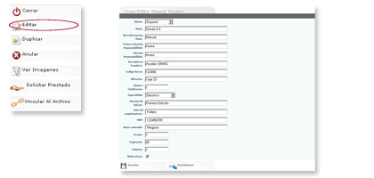
 Permite hacer un duplicado de Documentación Técnica que ya ha sido creada.
Permite hacer un duplicado de Documentación Técnica que ya ha sido creada.
Para duplicar un documento técnico realice los siguientes pasos:
- Haga clic en el icono Duplicar.
- Haga clic o edite donde desea realizar los cambios.
- Haga clic en Guardar.
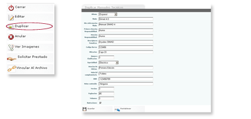
 - El sistema lo enviara de nuevo al detalle de la documentación.
- El sistema lo enviara de nuevo al detalle de la documentación.
- Haga clic en cerrar para finalizar y guardar definitivamente los cambios.
 Permite eliminar Documentación Técnica creada anteriormente.
Permite eliminar Documentación Técnica creada anteriormente.
Para Anular un documento técnico realice los siguientes pasos:
Haga clic en el icono Anular.
Haga cerrar para finalizar y anular definitivamente la documentación.
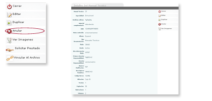
 - El sistema eliminará la documentación de la lista.
- El sistema eliminará la documentación de la lista.
 Permite ver las imágenes adjuntas a la Documentación Técnica creada anteriormente.
Permite ver las imágenes adjuntas a la Documentación Técnica creada anteriormente.
Para ver las imágenes adjuntas a un documento técnico realice los siguientes pasos:
- Haga clic en el icono Ver imágenes.
- Haga clic en Ruta en el nombre del archivo.
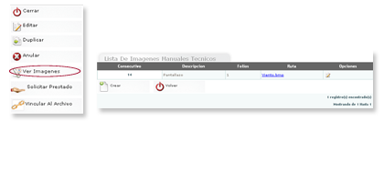
 - El sistema mostrará en una ventana aparte la imagen que usted seleccionó.
- El sistema mostrará en una ventana aparte la imagen que usted seleccionó.
- Una documentación técnica puede tener más de una imagen.
- Para editar la imagen haga clic en el icono editar en opciones.
Para adicionar una nueva imagen realice los siguientes pasos:
- Haga clic en crear.
- Digite la Descripción.
- Haga clic en el icono adjuntar (clip).
- Digite el número de folios.
- Haga clic en Guardar.
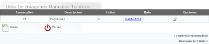
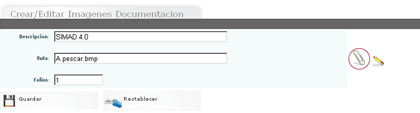
Para adjuntar un archivo de imagen realice los siguientes pasos:
- Haga clic en el icono adjuntar.
- Haga clic en el icono Examinar para ubicar el archivo a adjuntar.
- Haga clic en Adjuntar.
- Haga clic en Finalizar.
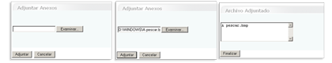
 - Para finalizar la visulaización de imagenes haga clic en el icono Volver.
- Para finalizar la visulaización de imagenes haga clic en el icono Volver.
 Permite a los usuarios solicitar al CAD una documentación técnica en calidad de préstamo.
Permite a los usuarios solicitar al CAD una documentación técnica en calidad de préstamo.
Para hacer una solicitud realice los siguientes pasos:
- Haga clic en el icono Solicitar Préstamo.
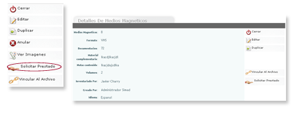
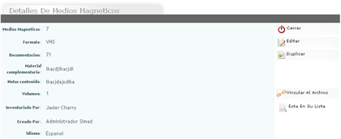
 - En la ventana de detalles cambiará el icono de solicitud por Está en tu lista.
- En la ventana de detalles cambiará el icono de solicitud por Está en tu lista.
 Permite vincular la documentación al archivo de clientes, archivos Central o Histórico.
Permite vincular la documentación al archivo de clientes, archivos Central o Histórico.
Para vincular una documentación técnica a los archivos realice los siguientes pasos:
- Haga clic en el icono Vincular al Archivo.
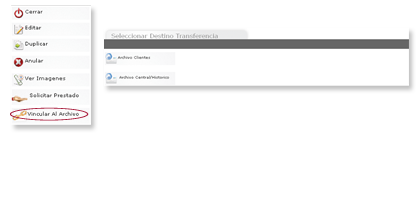
- Haga clic en el icono Archivo Clientes o Archivo Central/Histórico.
- Haga clic en Consultar para hacer una búsqueda del Cliente o Unidad Documental.
- Haga clic en guardar.
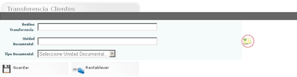
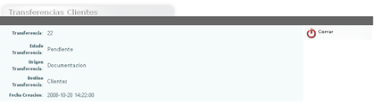
 - El sistema mostrará el detalle de la transferencia de la documentación al cliente o unidad documental seleccionada.
- El sistema mostrará el detalle de la transferencia de la documentación al cliente o unidad documental seleccionada.
- Haga clic en Cerrar para guardar los cambios y salir.